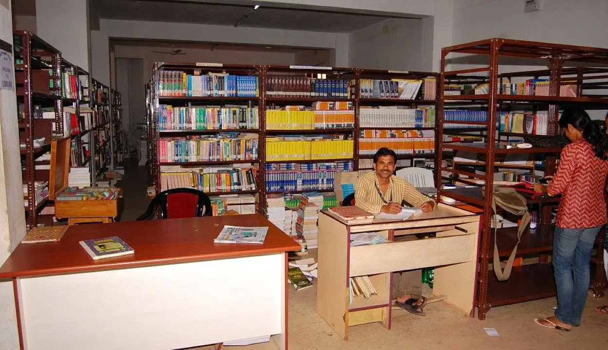
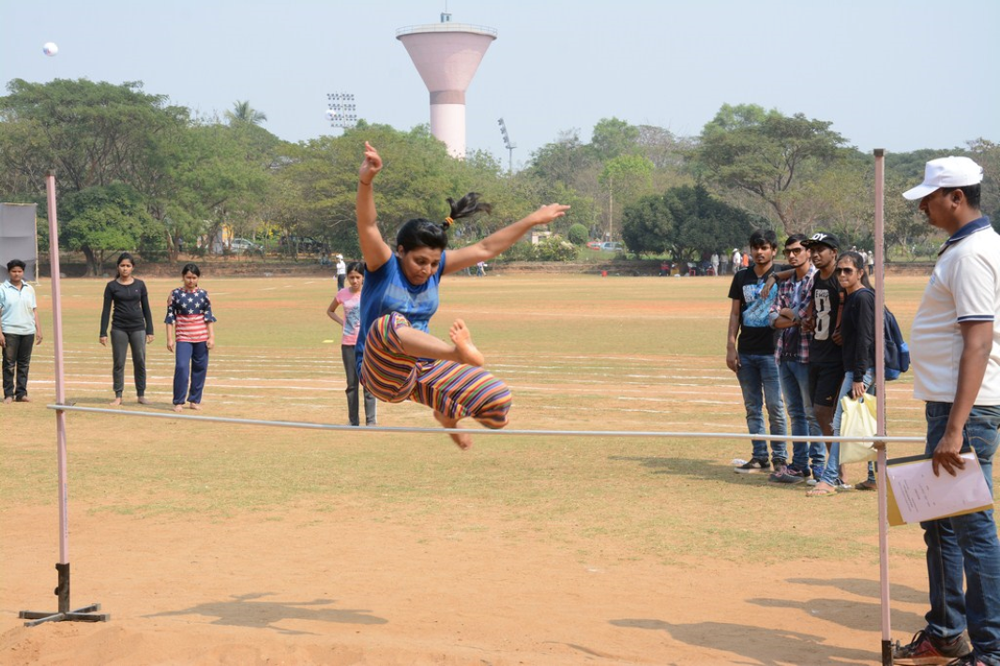
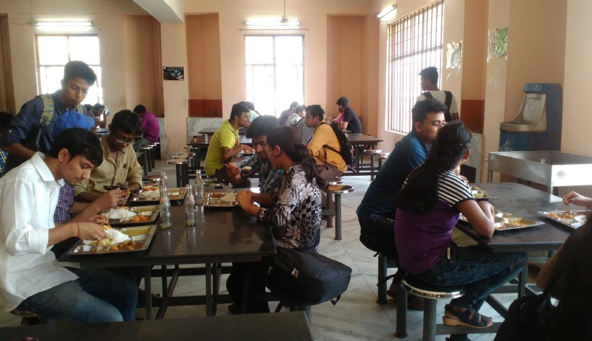

The faculty is good. Experienced and skilled. Helpful as well. Always ready to clear your doubts whenever you need. Yes, the curriculum is updated and Trident Academy is one of the best institutes in Odisha that can made you job ready !

Best library
Library sets the goal integrating information sources and services across disciplines in one umbrella by building a sound and comprehensive collection of both conventional and electronic resources on all branches of knowledge with a robust hi-tech infrastructural facilities and to redesign the systems and services in efficient, effective, and dynamic ways tailoring to meet the myriad information needs of students, research scholars, and faculty members of the university pin-pointedly, exhaustively and expeditiously anywhere on campus for promoting academic excellence.

Largest Play Ground
The playground's diverse range of amenities caters to a wide array of interests. Sports enthusiasts can revel in the basketball and volleyball courts, which are always bustling with friendly matches and intense competitions. The presence of well-maintained equipment and clear court markings enhances the overall experience.

Teasty and Healthy Food
The quality of the food served is second to none. Fresh ingredients, expertly crafted recipes, and a touch of culinary innovation result in dishes that are nothing short of spectacular. Whether it's a wholesome meal, a quick snack, or a tempting dessert, each bite is a testament to the culinary expertise of the canteen staff.


{kind=link}